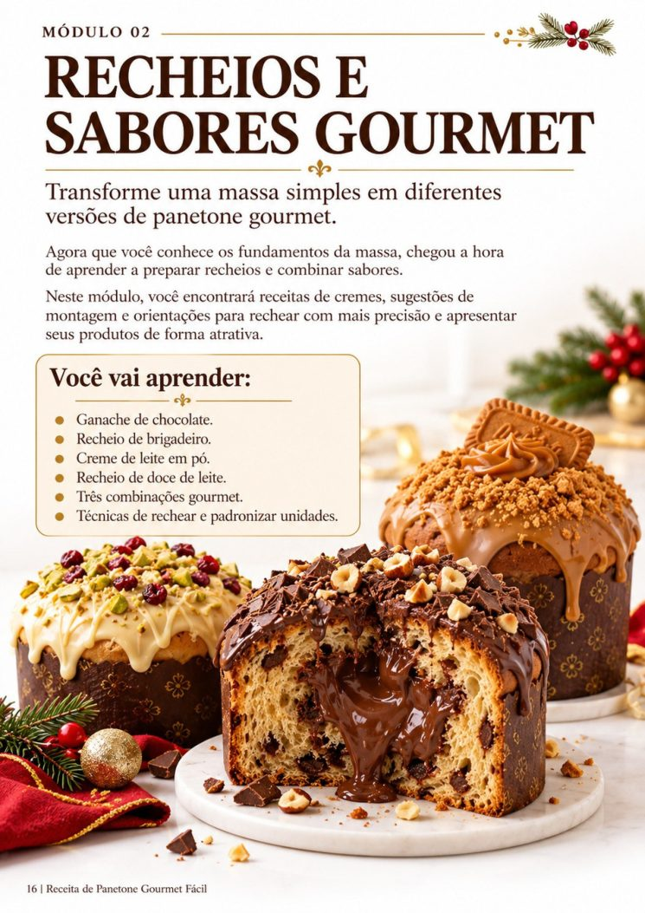
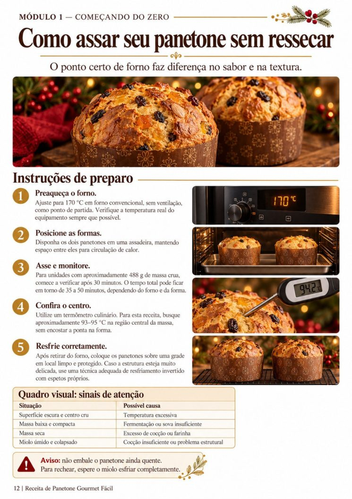
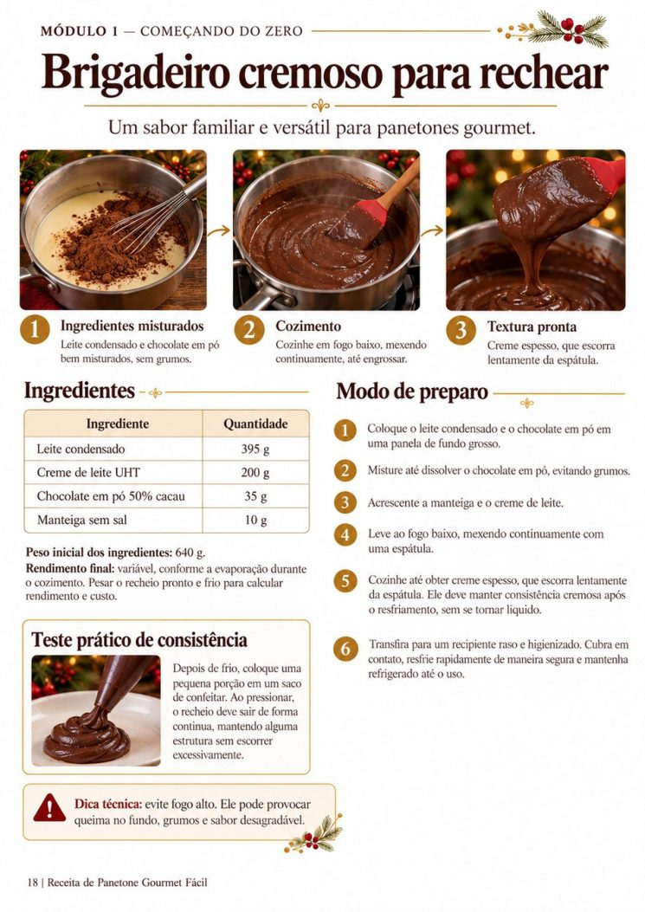

Faça panetones gourmet de dar água na boca e venda neste Natal.

Aprenda a preparar massas macias, recheios cremosos e decorações caprichadas, mesmo começando do zero. Depois, organize os custos para vender com mais segurança.
Fazer panetone gourmet não precisa ser complicado.
Tentando sozinha
- Receitas soltas na internet, cada uma de um jeito
- Massa que não cresce e ninguém explica o porquê
- Recheio que escorre ou deixa o panetone pesado
- Preço no chute, sem saber se está tendo lucro
Com o guia
- Uma receita só, explicada do começo ao fim
- Massa macia e bem crescida, e você sabe corrigir se algo der errado
- Recheio que fica no lugar na hora de cortar
- Preço que cobre os custos e deixa margem

Quatro etapas, na ordem da sua produção.
Receitas ilustradas para consultar enquanto você coloca a mão na massa.
-
1
Começando do zero
Ingredientes, equipamentos, organização, receita-base, fermentação, modelagem, forno, chocotone e correção de erros.
-
2
Recheios e sabores gourmet
Chocolate com brigadeiro, creme de leite em pó e doce de leite com castanhas, com montagem que não perde a estrutura.
-
3
Apresentação e finalização
Coberturas, decoração natalina, embalagens, etiquetas, conservação, transporte e checklists.
-
4
Vendendo no Natal
Custos, despesas por unidade, formação de preços, divulgação, encomendas e plano de produção.
Veja uma receita por dentro.
Esta é uma página real do guia, do jeito que você vai receber.
- Foto de cada etapaCompare a sua panela com a imagem e saiba se está no caminho certo.
- Ingredientes em gramasQuantidades exatas na tabela, sem medida "a olho".

- Modo de preparo numeradoPassos curtos, na ordem em que você faz na cozinha.
- Teste e dica técnicaComo saber se o recheio deu ponto e qual erro evitar.
O que dizem sobre o guia.
Mensagens de quem já colocou a mão na massa.
Comece sua primeira fornada com um caminho claro.
Tudo o que você precisa para sair da primeira massa até o primeiro pedido, por menos do que custa um panetone gourmet na loja.
Receita de Panetone Gourmet Fácil
Pagamento único
De R$ 49,90 por
R$ 14,90
- Guia digital ilustradoReceitas passo a passo, da massa à venda.
- Bônus: Controle de Encomendas NatalinasPedidos, sabores, entregas e pagamentos em um só lugar.
- Bônus: EtiquetasProntas para imprimir e dar cara de presente.
- Bônus: PrecificaçãoO custo de cada unidade e o preço de venda.
🔒 Compra 100% segura. Acesso por e-mail após a confirmação do pagamento.
Garantia de 7 dias
Você tem 7 dias para conhecer o guia com calma. Se não gostar, é só pedir o reembolso dentro desse prazo e devolvemos 100% do valor pago.
Perguntas frequentes
Ainda dá tempo de fazer para o Natal?
Sim. O acesso é imediato e o guia traz um plano de produção para você organizar a fornada e as encomendas nas próximas semanas.
Preciso ter experiência na cozinha?
Não. O guia foi pensado para iniciantes e explica os fundamentos da massa, as etapas de preparo e a montagem.
Serve para quem quer só presentear?
Sim. Além das receitas, o guia mostra decoração natalina, embalagens e etiquetas para transformar o panetone em um presente caprichado.
O produto é físico ou digital?
É um material digital em PDF. Não há entrega de um panetone físico.
Preciso de equipamentos profissionais?
O guia lista equipamentos simples e utensílios para começar, incluindo balança, formas e termômetro culinário.
O material ensina a vender?
Há um módulo com exemplos de custos, precificação, encomendas e divulgação. Os números são ilustrativos e não representam garantia de ganhos.
Posso comercializar os panetones que fizer?
Sim, respeitando a legislação e os requisitos locais de manipulação, transporte, alergênicos, rotulagem e validade.
Como recebo o guia e os bônus?
Assim que o pagamento é confirmado, você recebe o acesso ao guia e aos bônus no e-mail informado na compra. No Pix, a liberação costuma acontecer em poucos minutos.
Sua primeira fornada pode sair ainda este mês.
Por R$ 14,90 você leva a receita, os recheios e os bônus para começar hoje.
Quero o guia por R$ 14,90